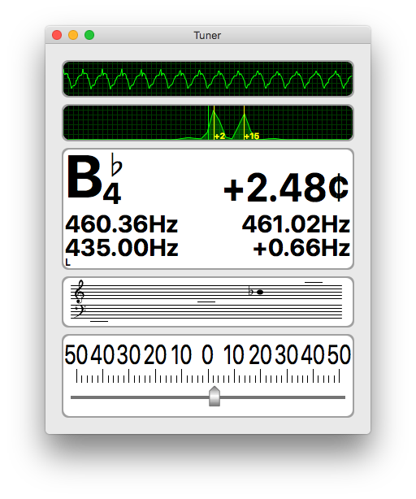
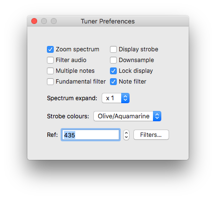
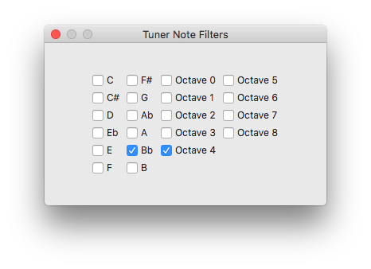

Introduction
Tuner is a musical intrument tuner developed for tuning accordions. It has many features intended to help with this particular use case, but may be used to tune any musical instrument. There are versions implemented for Windows, macOS and Linux. An Android version is also available. Downloads are here for desktop versions, and here for the Android version, which is also available from F-Droid.
|  |   |
Displays
- Scope display, showing the waveform picked up by the microphone
- Spectrum display, showing the spectrum generated, which may be zoomed in to show the tuning of up to eight reeds.
- Data display showing the current note, cents error, frequency error, reference note frequency and actual measured frequency
- Strobe display, which may be hidden to remove distraction
- Staff display, which replaces the strobe display when hidden
- Meter display, showing the cents error
Options
Some options may not be implemented on all versions.
- Low pass filter option for tuning bass reeds
- Fundamental filter option to remove spurious results
- Note filter - show only one note
- Downsampling option - use with caution
- Spectrum zoom - show just the current note
- Display lock - locks all the displays
- Multiple results - show up to eight results
- Copy results to clipboard
- Adjustable reference frequency
- Transpose the results display
- Multiple temperaments
Using
Play your instrument into your microphone and observe the display. The oscilloscope display at the top shows the input waveform. The display below shows the spectrum of the input. It may be zoomed in and out by clicking on the pane. When zoomed in the display shows about ±60 cents around the current note and includes all concurrent notes within that range.
The numeric display shows the note, deviation in cents, correct frequency, actual frequency, reference and frequency deviation. The display may be locked by clicking on it. The displayed values may be copied to the clipboard for pasting into another application by typing Ctrl-C. The strobe display below shifts left or right according to whether the input note is flat or sharp. The alternative staff display shows the note on a musical staff. These displays may be switched by clicking on them. The meter below shows the deviation in cents.
Keyboard Shortcuts
There are a number of keyboard shortcuts for toggling the options. Some may not be implemented on all versions.
- F - Low pass filter
- L - Display lock
- D - Downsampling
- M - Multiple notes
- Z - Spectrum zoom
- S - Strobe or Staff display
- K - Change strobe colours
- C - Copy results to clipboard
The spectrum expand/contract options apply to the non-zoomed spectrum.
- + - Expand the spectrum display
- – - Contract the spectrum display
Temperaments
There is a choice of 32 temperaments including Just, Equal, Meantone. If you choose a temperament other than Equal, you will need to choose a key, as the scale will change according to the key.
| Kirnberger II | Kirnberger III | Werckmeister III | Werckmeister IV |
| Werckmeister V | Werckmeister VI | Bach (Klais) | Just (Barbour) |
| Equal Temperament | Pythagorean | Van Zwolle | Meantone (-1/4) |
| Silbermann (-1/6) | Salinas (-1/3) | Zarlino (-2/7) | Rossi (-1/5) |
| Rossi (-2/9) | Rameau (-1/4) | Kellner | Vallotti |
| Young II | Bendeler III | Neidhardt I | Neidhardt II |
| Neidhardt III | Bruder 1829 | Barnes 1977 | Lambert 1774 |
| Schlick (H. Vogel) | Meantone # (-1/4) | Meantone b (-1/4) | Lehman-Bach |
Custom Temperaments
Some versions have the option of custom temperaments, loaded from a file or the app defaults.
Android
Use a text editor to create a file in Tuner/Custom.txt in the user area.
The file should contain one or more entries formatted as property entries.
The format is documented in Android Java Properties.
# Custom Temperaments
Custom: 1.000000000, 1.067871094, 1.125000000, 1.185185185, \
1.265625000, 1.333333333, 1.423828125, 1.500000000, \
1.601806641, 1.687500000, 1.777777778, 1.898437500
Entries will be loaded and displayed in Settings in alphabetical order at the end of the list. Erroneous entries will either be ignored or replaced with ones (1.0).